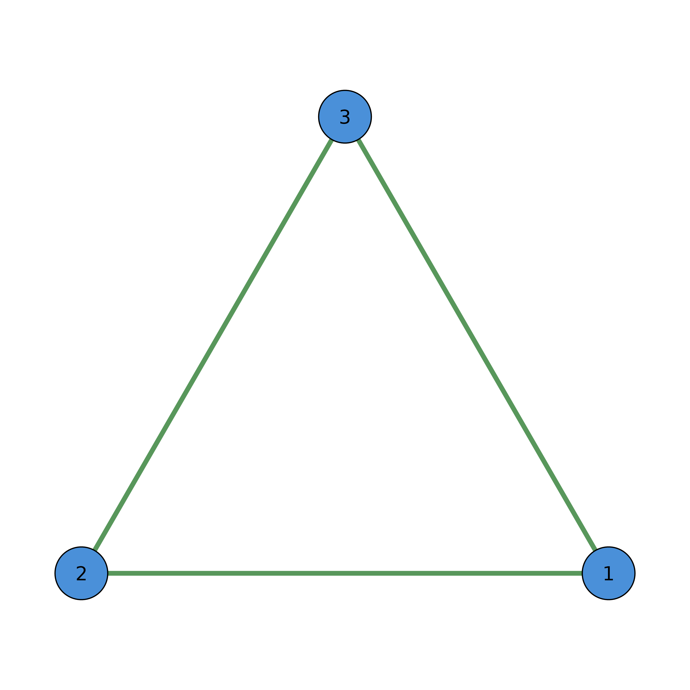
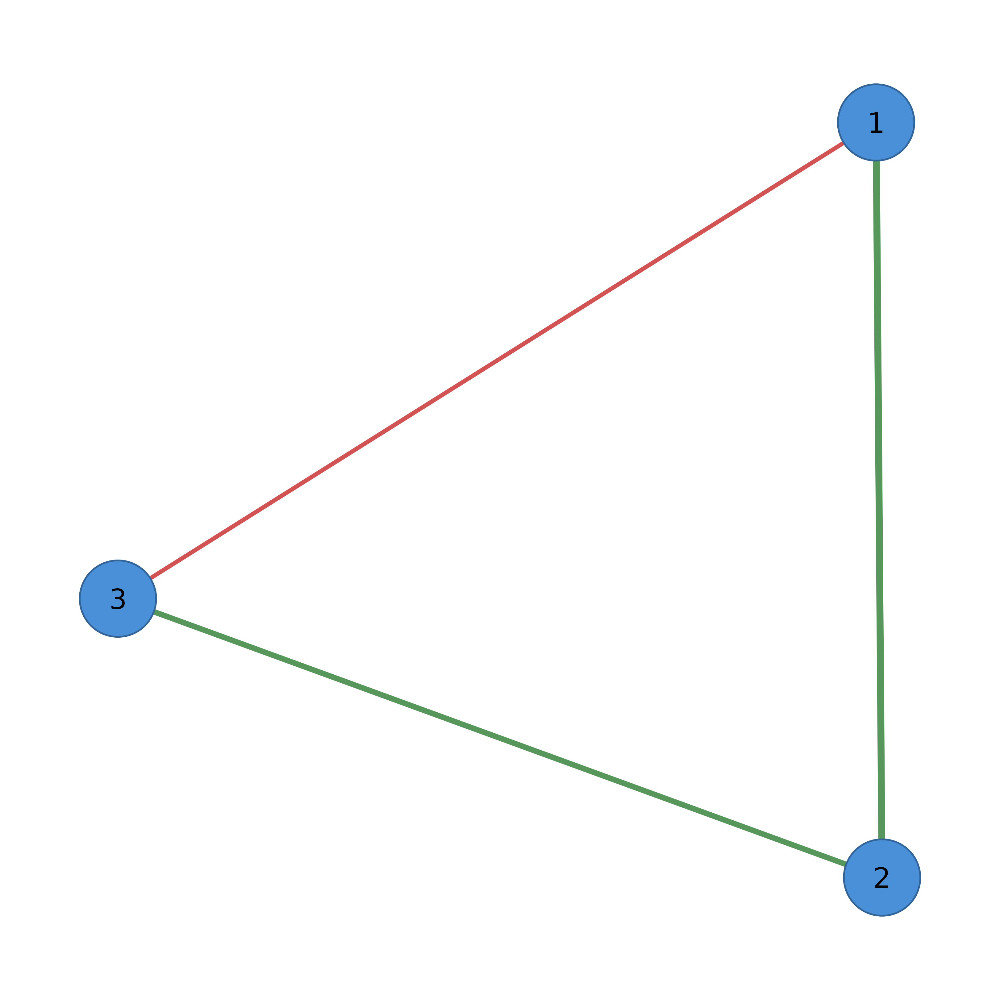

The main entry point for cograph. Accepts adjacency matrices, edge lists, igraph, statnet network, qgraph, or tna objects and creates a visualization-ready network object.
Arguments
- input
Network input. Can be:
A square numeric matrix (adjacency/weight matrix)
A data frame with edge list (from, to, optional weight columns)
An igraph object
A statnet network object
A qgraph object
A tna object
- layout
Layout algorithm: "circle", "spring", "groups", "grid", "random", "star", "bipartite", or "custom". Default "spring".
- directed
Logical. Force directed interpretation. NULL for auto-detect.
- node_labels
Character vector of node labels.
- seed
Random seed for deterministic layouts. Default 42. Set NULL for random.
- ...
Additional arguments passed to the layout function.
See also
splot for base R graphics rendering,
soplot for grid graphics rendering,
sn_nodes for node customization,
sn_edges for edge customization,
sn_layout for changing layouts,
sn_theme for visual themes,
sn_palette for color palettes,
from_qgraph and from_tna for converting external objects
Examples
# From adjacency matrix
adj <- matrix(c(0, 1, 1, 1, 0, 1, 1, 1, 0), nrow = 3)
cograph(adj)
#> Cograph Network
#> ==============
#> Nodes: 3
#> Edges: 3
#> Directed: FALSE
#> Weighted: FALSE
#> Layout: computed
#> Theme: classic
#>
#> Use plot() or sn_render() to visualize
#> Use sn_ggplot() to convert to ggplot2
# From edge list
edges <- data.frame(from = c(1, 1, 2), to = c(2, 3, 3))
cograph(edges)
#> Cograph Network
#> ==============
#> Nodes: 3
#> Edges: 3
#> Directed: FALSE
#> Weighted: FALSE
#> Layout: computed
#> Theme: classic
#>
#> Use plot() or sn_render() to visualize
#> Use sn_ggplot() to convert to ggplot2
# With customization (pipe-friendly workflow)
adj <- matrix(c(0, 1, 1, 1, 0, 1, 1, 1, 0), nrow = 3)
cograph(adj, layout = "circle") |>
sn_nodes(fill = "steelblue") |>
sn_edges(color = "gray50") |>
splot()

# Weighted network with automatic styling
w_adj <- matrix(c(0, 0.5, -0.3, 0.5, 0, 0.4, -0.3, 0.4, 0), nrow = 3)
cograph(w_adj) |>
sn_edges(color = "weight", width = "weight") |>
splot()

# With igraph (if installed)
if (FALSE) { # \dontrun{
library(igraph)
g <- make_ring(10)
cograph(g) |> splot()
} # }